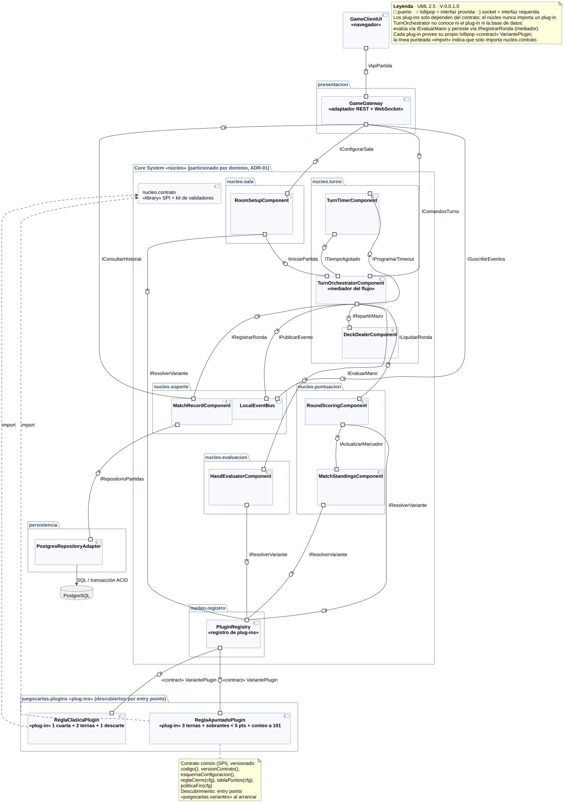

Entregable 2 · Fundamentos de Arquitectura de Software · equipo «Los Fabulosos Cadillacs». Tiempo estimado: 20 minutos.
| Valor | Impacto (si ocurre, ¿qué tan grave es?) | Probabilidad (¿qué tan posible es que ocurra?) |
|---|---|---|
| 1 · Bajo | Molestia visual o menor; nadie pierde la partida ni los datos. | Poco probable con el diseño actual. |
| 2 · Medio | Se interrumpe una partida o un jugador queda en desventaja, pero se recupera. | Puede pasar en algunas partidas. |
| 3 · Alto | Resultados o puntajes incorrectos, pérdida de datos o una partida que no puede continuar. | Es muy probable que pase si no se hace nada. |
| Impacto ↓ · Probabilidad → | 1 | 2 | 3 |
|---|---|---|---|
| 3 | 3 | 6 | 9 |
| 2 | 2 | 4 | 6 |
| 1 | 1 | 2 | 3 |
Verde 1-2: riesgo bajo · Amarillo 3-4: riesgo medio · Rojo 6-9: riesgo alto
¿Qué pasa si un jugador refresca el navegador a mitad de turno? ¿Si dos jugadores intentan cerrar la ronda al mismo tiempo? ¿Si el algoritmo que valida las ternas y escaleras se equivoca con el comodín? ¿Si el puntaje acumulado a 101 queda mal guardado? ¿Si un plug-in nuevo rompe el núcleo? ¿Si alguien se va y su turno nunca termina? ¿Si el servidor se reinicia en medio de una ronda?
Nombre: ____________________________________
| # | Componente o conexión | Riesgo (qué puede salir mal y por qué) | Impacto (1-3) | Probabilidad (1-3) | Total |
|---|---|---|---|---|---|
| 1 | |||||
| 2 | |||||
| 3 | |||||
| 4 | |||||
| 5 | |||||
| 6 |
Fase 2 (consenso, unos 20 minutos en llamada): se juntan los riesgos de las tres y se discuten solo los que alguien calificó distinto. Fase 3 (mitigación): para cada riesgo que quede en rojo (6 a 9), se acuerda un cambio concreto en la arquitectura.
Diagrama de componentes propuesto (microkernel)
